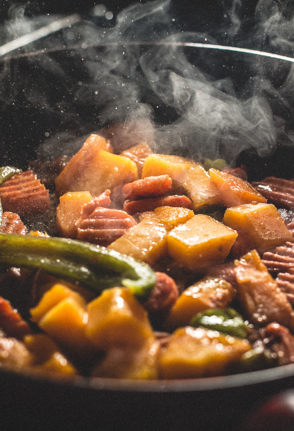

กินให้มากขึ้นและบ่อยขึ้นมากกว่าเดิม
โดยปกติแล้วการกินที่ถูกต้องคือ ต้องกินอาหารให้ครบ 5 หมู่ แล้วให้ครบ 3 มื้อ แต่สำหรับคนผอมแห้งที่ต้องการสร้างหุ่นให้ดีนั้น ต้องเพิ่มการกินให้มากกว่าเดิม โดยเพิ่มมื้อรองเข้าไป เป็น 5-6 มื้อต่อวัน เน้นอาหารที่มีแคลอรี่สูงในทุก ๆ มื้อและห้ามลดปริมาณของมื้อหลักด้วย สิ่งที่ต้องเพิ่มการกินเข้าไปก็คือ อาหารชนิดที่มีโปรตีน และคาร์โบไฮเดรต เพื่อเพิ่มแคลอรี่ให้สูงขึ้น และควรจะกินปริมาณแคลอรี่ให้สูงขึ้นประมาณ 500 ต่อวัน
กินเยอะแต่กินอาหารที่มีประโยชน์
กินอาหารเยอะแล้วไม่ใช่ว่าจะกินอะไรก็ได้ตามใจฉันนะครับ เพราะว่าหากกินอาหารที่ไม่มีประโยชน์และเน้นเพียงแค่การเพิ่มน้ำหนัก โรคอื่น ๆ อาจจะตามมาได้ ดังนั้นควรจะกินอาหารที่ดีและมีประโยชน์ด้วย โดยสัดส่วนที่ต้องกินนั้นคือ แป้ง 70 โปรตีน 15 ไขมัน 15 ดูอาหารได้จากข้อที่แล้วได้เลยครับ แต่สิ่งสำคัญที่สุดก็คือ ไม่ควรกินอาหารที่ให้โทษแก่ร่างกาย เช่น อาหารจำพวกหมักดอง เครื่องดื่มแอลกอฮอล์ หรือน้ำอัดลมชนิดต่างๆควรเลี่ยงให้มากที่สุด เพราะเป็นอาหารที่ทำลายสุขภาพ ควรย้ำเตือนตัวเองอยู่เสมอว่า ต้องเพิ่มน้ำหนักโดยที่เรามีสุขภาพที่ดี ไม่ควรจะรับผลเสียเข้ามาในร่างกาย ทริคการกินเพิ่มน้ำหนักง่าย ๆ คือ อย่าปล่อยหรือรอให้ท้องหิว, กินให้เร็วขึ้น, ห้ามดื่มน้ำก่อนกินข้าว เพียงแค่นี้ก็จะทำให้คุณน้ำหนักเพิ่มขึ้นได้แล้ว สำหรับคนผอมแห้ง ที่อยากมีสุขภาพดีต้องลอง
ใช้ตัวช่วยโดยอาหารเสริมวิตามินและเกลือแร่
การกินยาอาหารเสริม เช่น วิตามินและแร่ธาตุที่สามารถที่ช่วยเพิ่มความอยากอาหารได้ คือ วิตามินเอ และวิตามินบีรวม เพราะจะช่วยเร่งการเผาผลาญแป้ง ไขมัน โปรตีน เพื่อให้เป็นพลังงาน ดังนั้นผู้ที่ได้กินแล้วจะมีอาการหิวบ่อยขึ้น รวมถึงมีแคลเซียม แมกนีเซียม ทองแดง ซิงค์ บริเวอร์ยีสต์ อีกด้วย หรือจะเป็นโปรตีนเสริมอาหารอย่างเช่น เวย์โปรตีน (Whey Protien) ซึ่งโปรตีนประเภทนี้จะช่วยทำให้ร่างกายทำงานปกติ จากกรดอะมิโนช่วยสร้างฮอร์โมนและสร้างภูมิคุ้มกันด้วย นอกจากนั้นโปรตีนเสริมนี้ยังช่วยให้คนผอมแห้งมีพละกำลังเพิ่มขึ้นในการออกกำลังกาย และยังช่วยเสริมสร้างกล้ามเนื้อของร่างกายให้แข็งแรง ข้อควรระวังก็คือควรกินตามข้อจำกัด ให้เหมาะสมกับปริมาณโปรตีนที่ร่างกายต้องการของแต่ละช่วงวัยด้วย เพราะหากกินมากจนเกินไปหรือไม่ถูกวิธี อาจส่งผลเสียต่อไตได้
